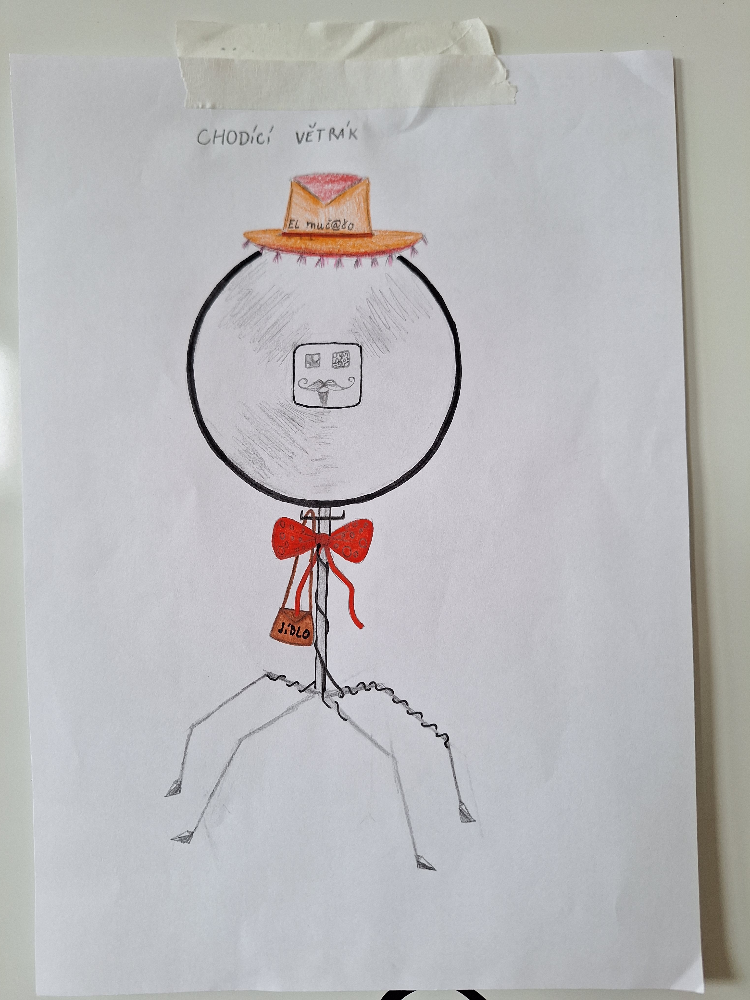
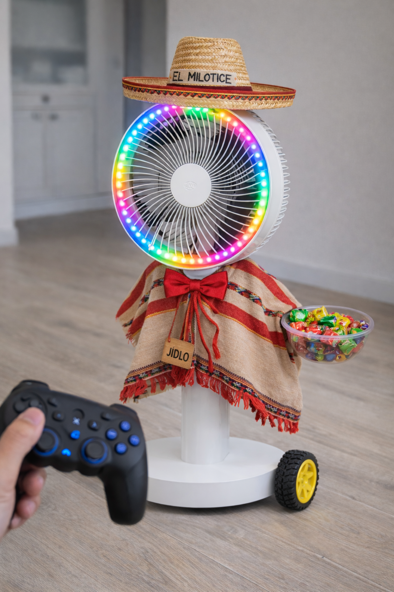

Kostým a dekorace
Aby větrák vypadal jako mexičan (podle původního návrhu dětí z Milotic), je třeba vyrobit sombrero a poncho. Tato část je kreativním úkolem pro středoškoláky – přesný vzhled je na vašem uvážení.


Sombrero (klobouk)
Rozměry
- Průměr: přibližně 110 mm
- Na přesných rozměrech příliš nezáleží – jde o to, aby na hlavici vypadal dobře a nespadával
Uchycení
Klobouk je uchycen na vršku hlavice větráku přes ložisko ZKL 51101A. Díky ložisku se klobouk může volně otáčet nezávisle na hlavici – při běžícím ventilátoru se klobouk nebude roztáčet spolu s ním.
Materiál
Je zcela na vaší kreativitě a možnostech.
Poncho
Požadavky
- Musí neblokovat kola na spodní straně podvozku
- Musí neblokovat ventilaci – nezakrývat mřížku větráku
- Musí nezakrývat ultrazvukové senzory na podvozku
- Nesmí se zachytávat do pohyblivých částí
- Mělo by být snadno sundavatelné (pro přístup k elektronice)
Tipy
- Poncho by mělo zakrývat přechod mezi podvozkem a sloupkem
- Zvažte upevnění na suchý zip nebo gumičku (snadné sundání)
- Typické mexické barvy: červená, zelená, oranžová, žlutá – pruhy nebo vzory
Nádobka na bonbóny
Nádobka je součástí 3D tištěných dílů (viz 3D tisk). Slouží pro rozvoz balených bonbónů.
Požadavky na nádobku
- Dostatečně velká pro několik balených bonbónů
- Snadno přístupná (děti si bonbóny vezmou samy)
- Bezpečně uchycená, aby nevypadávala při jízdě
- Nesmí překážet ventilátoru ani kolům